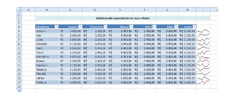
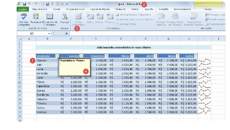
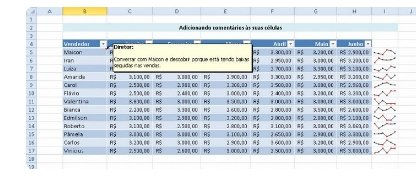
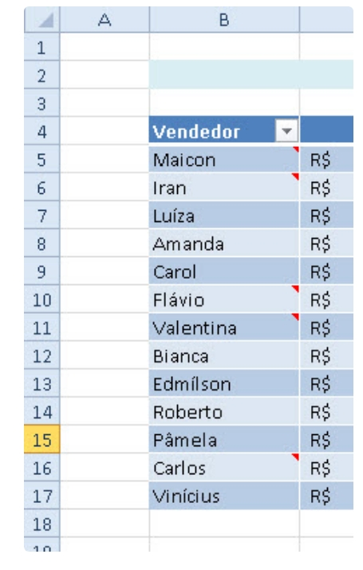
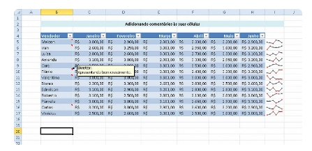
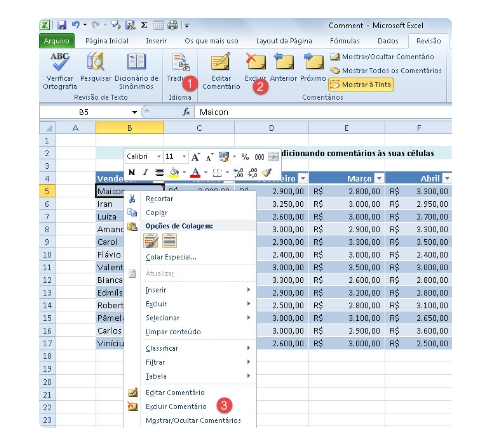
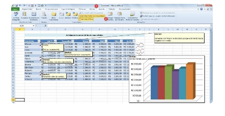

Hoje aprenderemos como adicionar comentários aos seus projetos no Excel. Acabou aquele trabalho todo de ter que salvar suas notas em um arquivo separado no Word, anotar a célula a qual você está se referindo e depois enviar junto com a planilha em questão ao seu colega.
Agora você anotará e enviará tudo na mesma planilha, sem o problema da sua contraparte não encontrar a qual parte do seu projeto se refere o comentário, de alguém perder o arquivo com os comentários separados e mais: aprenderemos como incrementar suas notas com imagens, por exemplo.
rimeiramente vejamos qual será nosso exemplo de hoje:
Veja que temos uma planilha com os nomes dos vendedores e as vendas dos mesmos no semestre. Digamos que queiramos criar uma nota para Maicon que há 2 meses tem perdas sucessivas em suas vendas. Para isso selecionamos a célula onde desejamos criar o comentário, neste caso a célula com o nome do vendedor, e na guia Revisão, no grupo Comentários, clique em Novo Comentário. O atalho para novo comentário é Shift + F2 o ainda, clique com o botão direito e depois "Inserir comentário" Independente da forma como tenha sido criado, veja como fica:
Reparem que meu nome, como está registrado como dona da cópia do Excel no PC, aparece automaticamente como comentarista. Veja que você pode mudar o nome, o tamanho do quadro, sua posição, fonte, etc.
Veja que todas as células onde têm comentários aparecerá um pequeno triângulo vermelho no topo direito da célula.
Agora é só passar o cursor do mouse em cima de célula e o comentário será exibido, mesmo que a célula não esteja selecionada.
Para editar um comentário ou exclui-lo clique com o botão direito na célula com o comentário e aparecerá as devidas opções, as mesmas podem ser encontradas na guia "Revisão"
Mas os comentários podem ser bem mais complexos, podemos, por exemplo, inserir uma imagem dentro do comentário. Para isso crie o comentário e clique com o direito nas BORDAS DO COMENTÁRIO, do contrário não funcionará, e vá em "Formatar Comentário...", na caixa que abrir vá na guia "Cores e Linhas", abra o menu "Cor" e vá em "Efeitos de Preenchimento", na nova janela vá na guia "Imagem", "Selecionar Imagem" e escolha a imagem que quer adicionar e dê ok. Pronto redimensione o comentário de uma forma que fique boa a visualização da imagem e pronto.
O uso de comentários pode ajudá-lo a tornar uma planilha mais fácil de entender fornecendo mais contexto para os dados nela contidos. Por exemplo, você pode usar um comentário como uma anotação que fornece informações sobre os dados em uma célula individual ou pode adicionar um comentário ao cabeçalho de uma coluna para fornecer orientações sobre os dados que o usuário deve inserir.